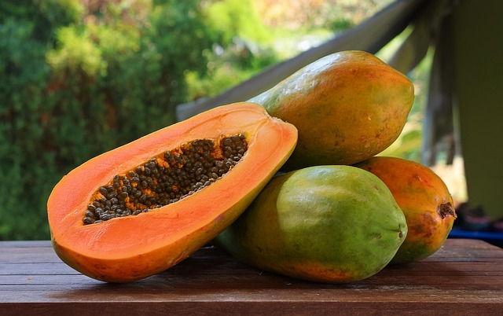

Freshness You Can Trust

Papaya is a tropical fruit that rich in vitamins A, C, and E, fiber, folate, and antioxidants. It contains an enzyme called papain, which helps improve digestion and supports gut health. Papaya strengthens the immune system, promotes healthy skin, supports eye health, and helps reduce inflammation. It is best enjoyed fresh, in fruit salads, smoothies, or juices.